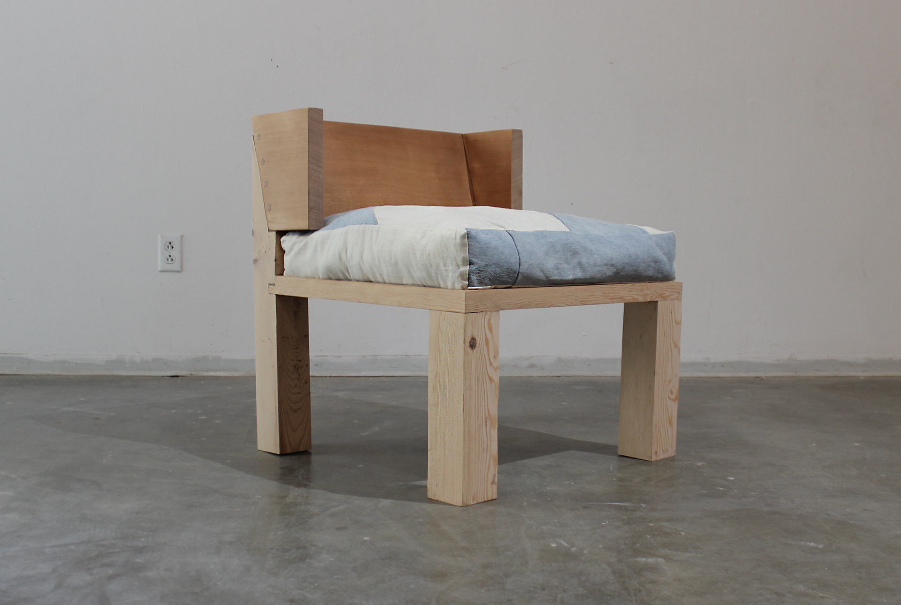
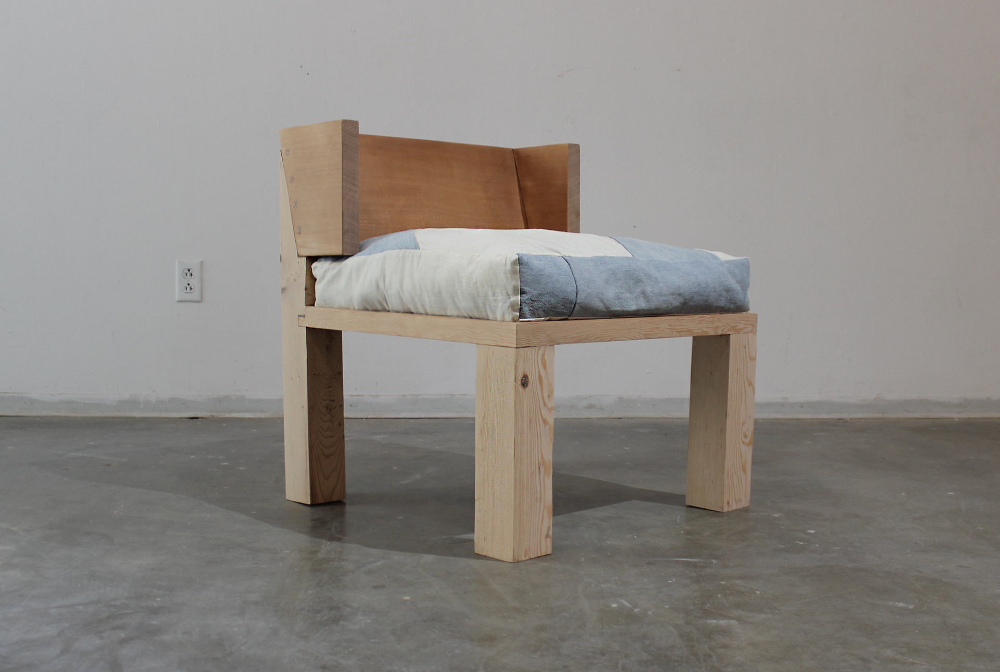
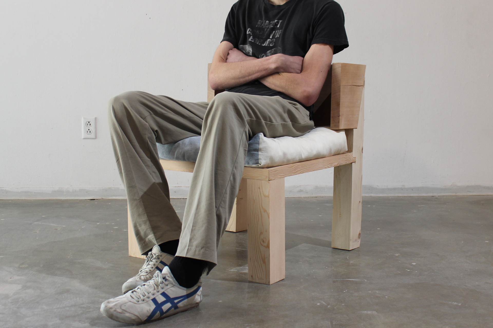
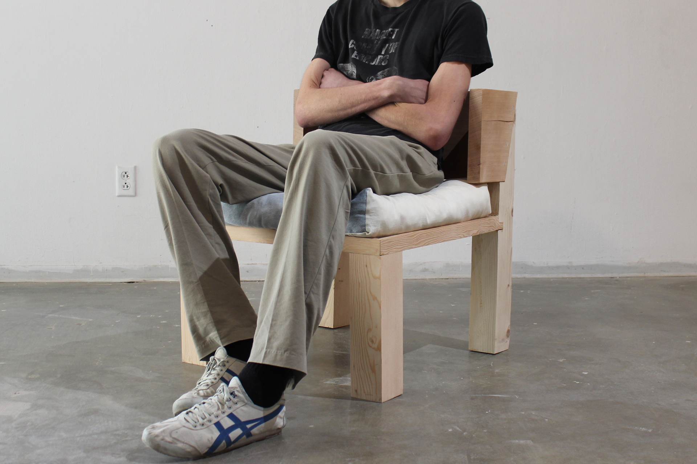

 

February 2023.
Frame: Reclaimed Wood.
Cushion: Linen, Denim.
This piece is a collaboration between Sisters, Ella and Tessa Bandouveris. Designed together. Frame
fabricated in Los Angeles, California by Ella Bandouveris. Cushion fabricated in Berkeley, California
by Tessa Bandouveris.
Rooted in the materiality that forms the structure, we used found and reclaimed wood. The cushion is made from patches of Ella’s favorite jeans from high school and a ream of linen that Tessa has been making clothing with for years. Patched and stitched together, the chair reflects the patchwork, improvisation, and sharing that comes with being a part of a sisterhood. Us sisters have always had a particular interest in furniture design and sculptural functionality, we are excited to be at the beginning of many more creative endeavors.